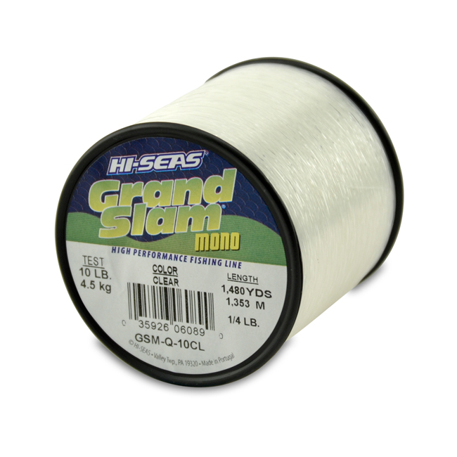

Hi-Seas Grand Slam Monofilament
Diameter chart, reel capacity & backing guide

This guide covers original Hi-Seas Grand Slam Monofilament in Clear quarter-pound spools, from 6 to 30 lb. The amount of line in each spool depends on its strength. Grand Slam Select and Bluewater are separate lines.
- Construction
- Monofilament
- Listed strengths
- 6-30 lb
- Line type
- Monofilament main line
Original Grand Slam in bulk supply
Use these rows when choosing the original Grand Slam mono as a working line or evaluating its physical size for backing. The quarter-pound package supplies 2,000 yards at 6 lb but 440 yards at 30 lb. Decide which diameter suits the rod and reel first; the changing supplied length is a package consequence, not a reason to choose a particular test.
How much Grand Slam Mono will fit?
Calculated estimates, not measured fills. Stop at the reel manufacturer's fill level even if some line remains.
Hi-Seas Grand Slam Monofilament diameter chart
Original Grand Slam Monofilament Clear GSM-Q quarter-pound product codes only: per-product code official test, inch/mm diameter and yardage. No Bluewater, Select or leader substitutions.
| Strength | Inches | mm | Spools (yd) |
|---|---|---|---|
| 0.010 | 0.250 | 2000 | |
| 0.011 | 0.270 | 1830 | |
| 0.012 | 0.300 | 1480 | |
| 0.014 | 0.350 | 1090 | |
| 0.016 | 0.400 | 860 | |
| 0.018 | 0.450 | 660 | |
| 0.020 | 0.500 | 535 | |
| 0.022 | 0.550 | 440 |
Choosing your Grand Slam Mono strength
Choose among the verified 6-30 lb original Grand Slam tests for your rod, lure and cover. Do not borrow the thinner dimensions of Grand Slam Bluewater or Select.
The checked 10 lb is .012 in/0.30 mm and 20 lb is .018 in/0.45 mm. Same-brand test names do not replace physical diameter in a fill estimate.
The quarter-pound spool label is package weight, not a 1/4 lb breaking-strength rating. Stronger, thicker line means fewer yards in this supply format.
This is a source-based specification and setup guide, not a hands-on review or comparative performance test.
Want a guided recommendation?
Continue in the Setup WizardSame pound test, different diameters
At your selected strength
Loading diameter comparisons...
What changes with another line?
Nearby diameters in the line database
| Line | Strength | Inches | Difference |
|---|---|---|---|
| Loading line database... | |||
Backing, working line & leaders
Read GSM-Q and the test
The checked 10 lb quarter-pound spool supplies 1,480 yards. Confirm the original Grand Slam product code instead of similarly named Select or Bluewater products.
Plan multiple fills from the supply
Estimate the working amount needed per reel and leave allowance for knots and trimming. A bulk supply need not all go on one reel.
Use exact mono size for backing
When using Grand Slam below another working line, select its actual diameter as backing. That is a different use from treating it as the casting mainline.
How Much Fits on These Reels?
Estimated full-spool capacity for the Grand Slam Mono strength selected above, with no backing. These are calculated examples, not physical tests or recommendations for every pairing.
Loading capacity estimates...
Grand Slam Mono questions, answered
Is this Grand Slam Bluewater?
No. These are original GSM-Q Grand Slam Monofilament product codes. Bluewater and Select have separate identities and specifications.
Does quarter-pound describe line strength?
No. It is the weight-spool format. The selected test, such as 10 lb, is a separate label.
Why does 30 lb have only 440 yards?
That is the official length of the checked 30 lb quarter-pound product code. Thicker mono consumes more of the fixed supply-spool weight per yard.
Specifications & sources
Checked September 13, 2026 against the official product information linked below. Both inch and mm figures are independently published in official product code titles. They are retained with normal rounding. Offered specifications do not establish current stock; this is not an independent diameter measurement.
Calculations use the catalog's listed inch diameters. Published inch and millimeter values may differ slightly because of rounding.
- Hi-Seas official product information Current Grand Slam Monofilament Clear GSM-Q 1/4-pound spools, all eight assigned tests with official per-product code inch/mm/yard/m labels. Not Grand Slam Select or Bluewater.
- Hi-Seas official supporting source Current Grand Slam Monofilament Clear GSM-Q 1/4-pound spools, all eight assigned tests with official per-product code inch/mm/yard/m labels. Not Grand Slam Select or Bluewater.
- Hi-Seas official supporting source Current Grand Slam Monofilament Clear GSM-Q 1/4-pound spools, all eight assigned tests with official per-product code inch/mm/yard/m labels. Not Grand Slam Select or Bluewater.
- Hi-Seas official supporting source Current Grand Slam Monofilament Clear GSM-Q 1/4-pound spools, all eight assigned tests with official per-product code inch/mm/yard/m labels. Not Grand Slam Select or Bluewater.
- Hi-Seas official supporting source Current Grand Slam Monofilament Clear GSM-Q 1/4-pound spools, all eight assigned tests with official per-product code inch/mm/yard/m labels. Not Grand Slam Select or Bluewater.
- Hi-Seas official supporting source Current Grand Slam Monofilament Clear GSM-Q 1/4-pound spools, all eight assigned tests with official per-product code inch/mm/yard/m labels. Not Grand Slam Select or Bluewater.
- Hi-Seas official supporting source Current Grand Slam Monofilament Clear GSM-Q 1/4-pound spools, all eight assigned tests with official per-product code inch/mm/yard/m labels. Not Grand Slam Select or Bluewater.
- Hi-Seas official supporting source Current Grand Slam Monofilament Clear GSM-Q 1/4-pound spools, all eight assigned tests with official per-product code inch/mm/yard/m labels. Not Grand Slam Select or Bluewater.
- Hi-Seas official supporting source Current Grand Slam Monofilament Clear GSM-Q 1/4-pound spools, all eight assigned tests with official per-product code inch/mm/yard/m labels. Not Grand Slam Select or Bluewater.